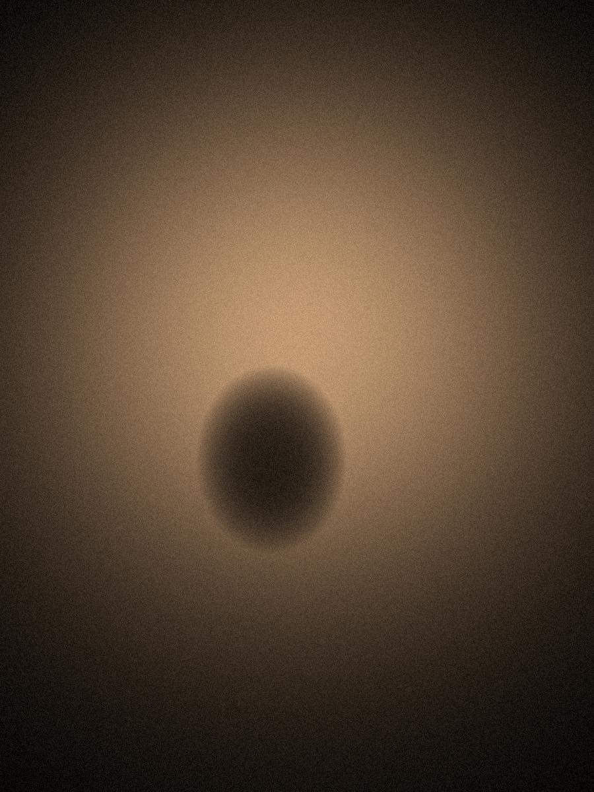
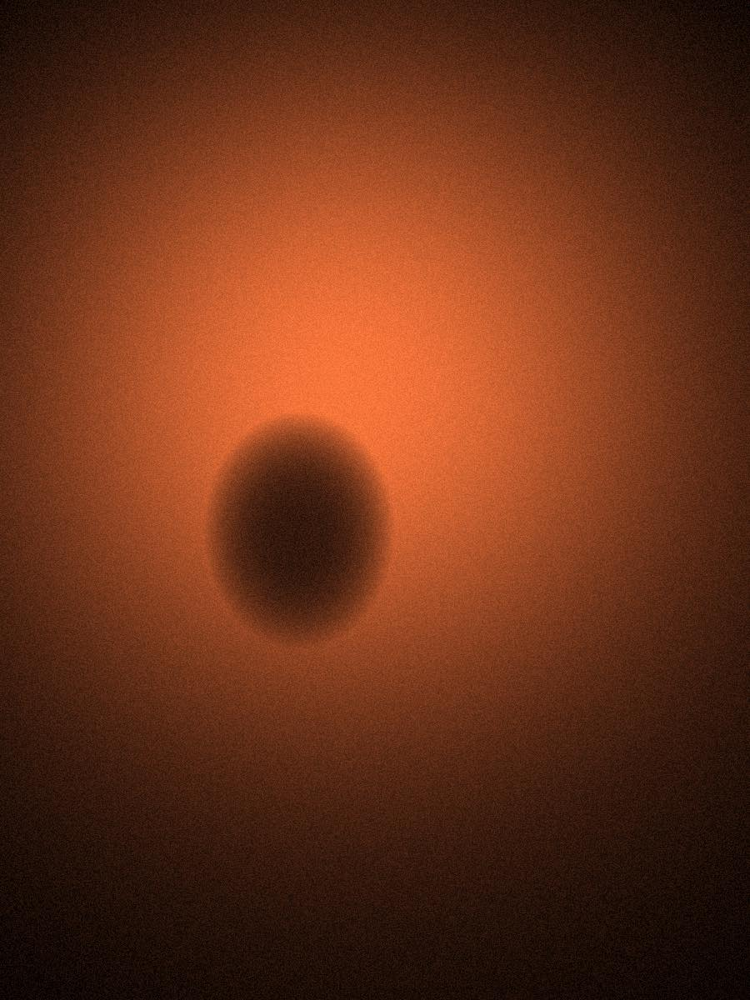
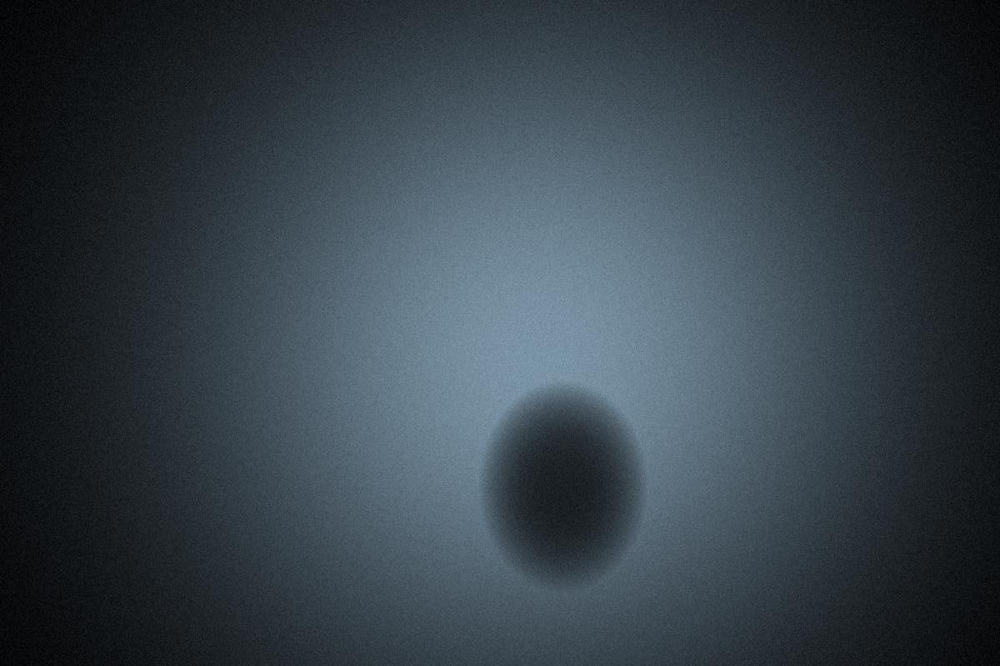
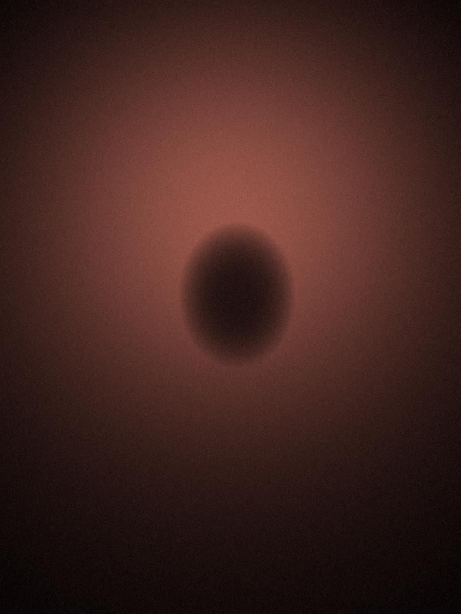
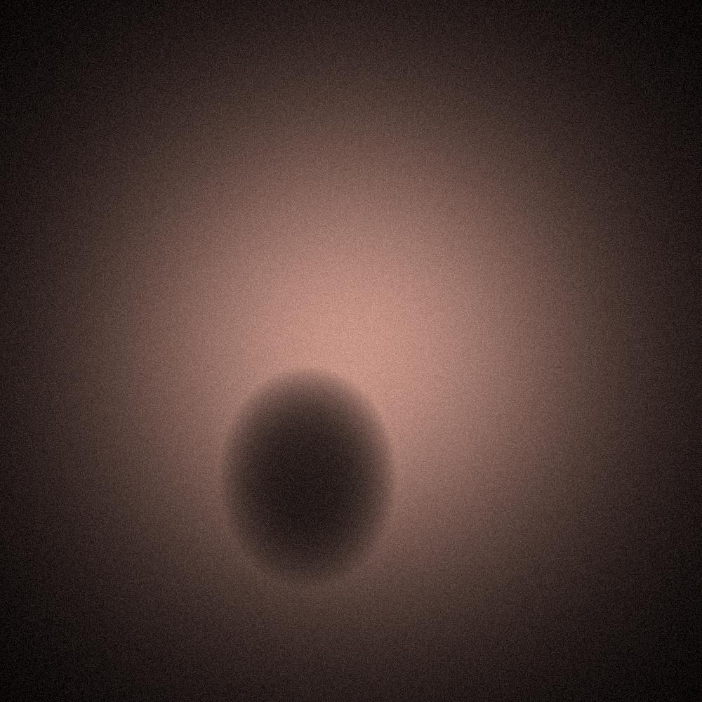
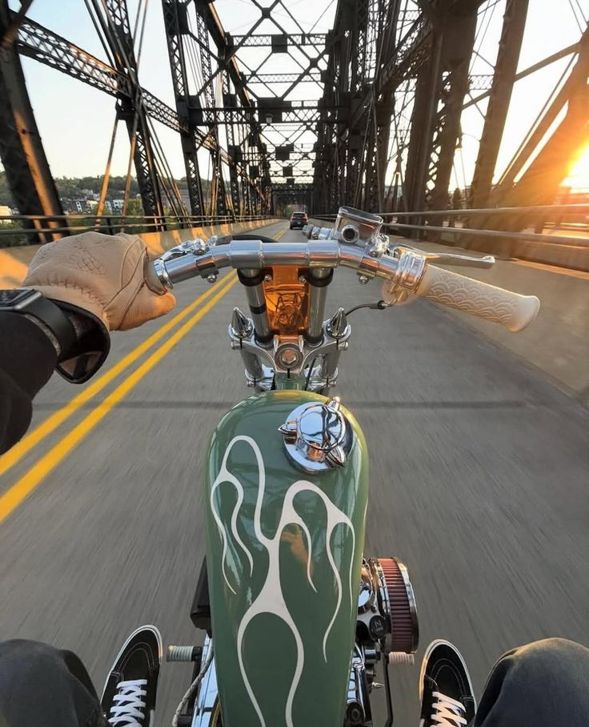
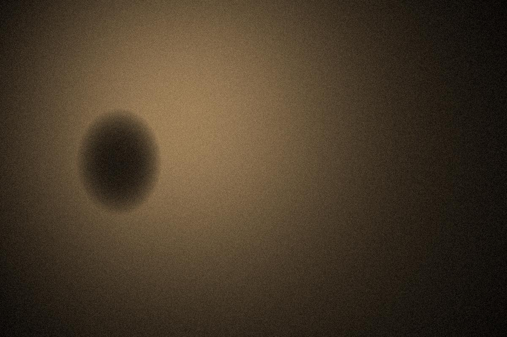
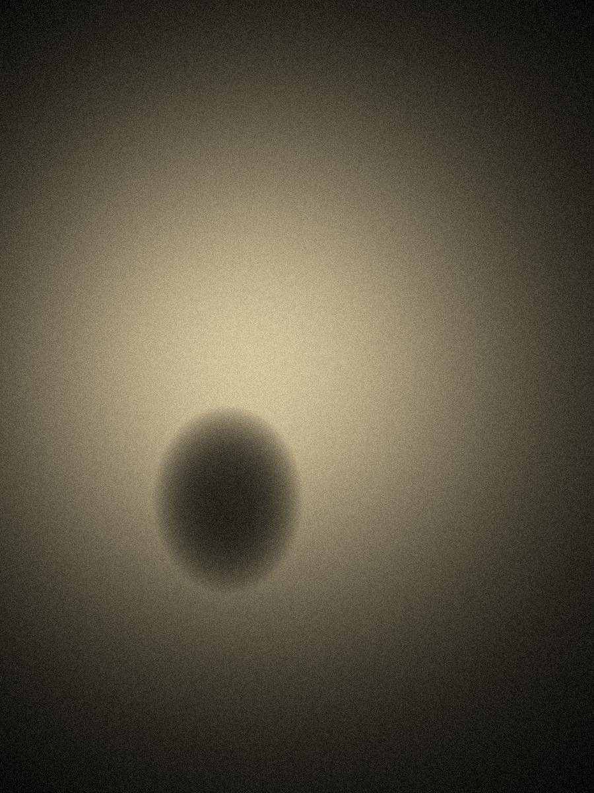
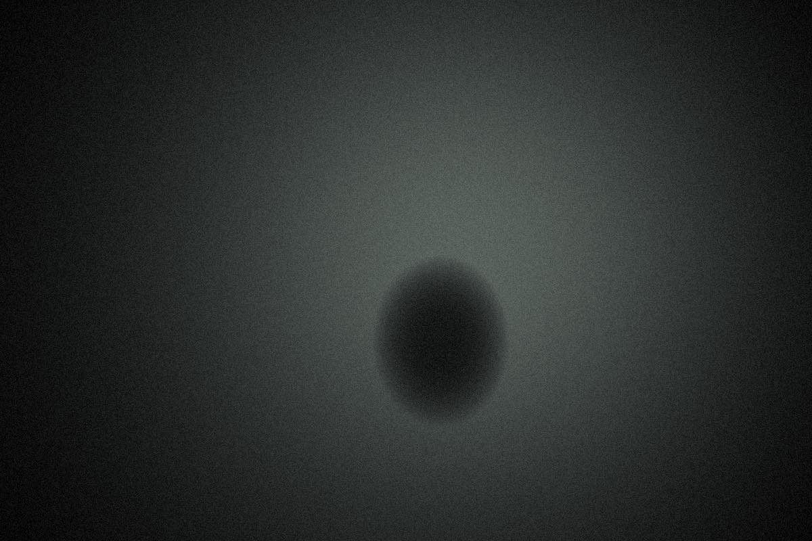

Issue 01
The Gallery
Ten photographs. Ten sentences. Hover or focus on an image to bring its colour back.
01
Feral


Not angry. Honest.


She’s still going to the meeting.


It saw you first.


Calm is a muscle.


Distortion is just closeness.
02
Calm in the chaos


The road doesn’t ask where you’re going.


Some things were here before the question.


Everyone left. The light stayed.


Water rising. Horse unbothered.

Everyone moved. One of them didn’t.
Read it differently?
Your sentence might be better than ours.